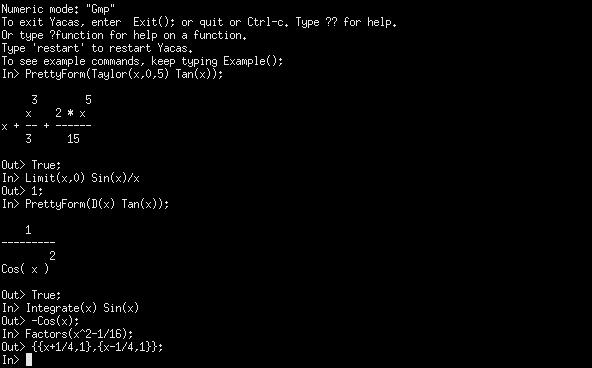

Yacas es un acrónimo para Yet Another Computer Algebra System.
Podemos usar Yacas de tres formas:
Con interface gráfico.

Proteus es el interface gráfico de Yacas.
En consola.
Yacas ejecutandose en consola.
Se puede ejecutar dentro de TeXmacs.
Yacas posee un mecanismo de plugins que permite la carga dinámica de librerias externas a Yacas. Mediante este mecanismo podemos ampliar las funcionalidades de Yacas.
Importante
Podemos utilizarlo en una arquitectura de cliente/servidor y utilizar un ordenador más potente para realizar los cálculos viendolos en el nuestro.